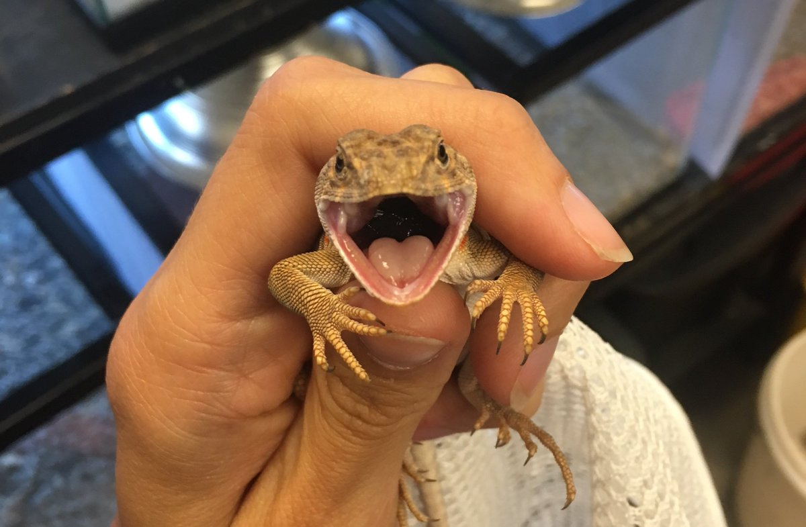

I'm a researcher and educator passionate about breaking down barriers between knowledge and people.
I use the power of genetics and genomics to learn about mating system evolution. Currently, I'm working on projects exploring the genetics of sex reversal and pterin-based color in reptiles.
This website is currently under construction. 